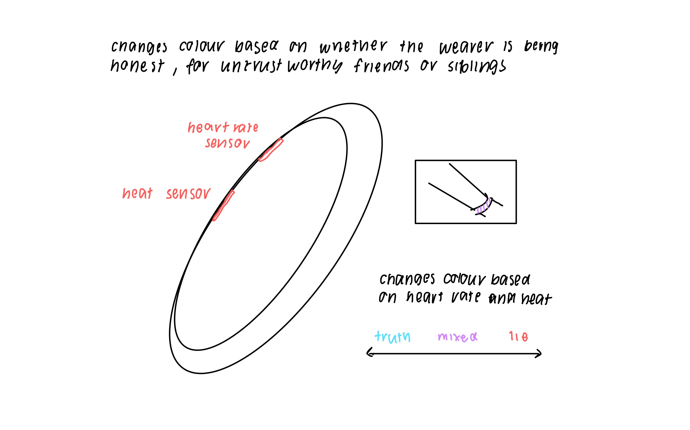

FILE: WEEK 8
HUNTNGATHER

CAMOFLASH is an “anti-paparazzi clutch”. It is a high powered LED device which overexposes professional dSLR cameras - used by paparazzi - with a bright flash or pulse. It works on two settings a pulsing torch mode and flashback response mode. Pulsing torch mode activates full light power with the press of a button in which light pulses are randomly time to degrade auto-exposure algorithms. Flashback response is activated by rotating the device 90 degree. Once active an camera flash will trigger a light pulse to overexpose the paparazzi photo.
This project is a prototype and case study for wearable technology development by Adam Harvey. It began as conceptual model at NYU ITP in 2008 and developed in functional and tested prototype in 2010.

OURA RING is a smart ring that tracks health data including sleep quality, stress, activity levels and body temperature. The Oura Ring 4 uses red and infrared LEDs to measure blood oxygen during sleep. Green and infrared PPG sensors alternate to measure heart rate, heart variability and respiration rate during sleep. A digital temperature sensor measures average body temperature variation and accelerometer tracks movement/activity. Previous models use similar sensors.
This data is shared with a user’s membership account available in the Oura app. Membership works on a subscription basis. The ring is water resistant and has battery life of 7 days. The style of the ring can also be customised to users preferences depending on the model.

MATERIAL EXPRESSIONS NO. 2 was a durational performance by Laura Splan with biometrical activated sculpture and sound. Electromyography (EMG) electrodes were attached to the chest of a knitter as they knit a scarf. Simultaneously the EMG electrodes triggered sounds in a MIDI synthesizer with each beat of the performer's heart and actuated a motor to unravel the scarf.
SEMINAR
Arduino is a an open source electronic prototyping platform. It includes a physical programmable circuit board (microcontroller) and integrated software development environment (IDE), which is used to write and upload code to the board. Outputs and input can connected to the board to be manipulated analog or with code.
KEY COMPONENTS + WORDS
- ANALOG PINS → Similar to physical switch can either be high or low (A0 -A5)
- DIGITAL PINS → Regulate power output and can dynamically adjust internal resistors &/or PWM (0-13)
- DGND or GROUND → where positive charge turns negative, alway required to prevent current moving around the board unregulated
- INPUT → sense and measure any change in voltage, resistance and current that Arduino can read or write to
- OUTPUT → sends current through pins, can be motors, sound, light, displays, serial connections, etc
- LIBRARIES → collection of prewritten code that can be used to perfrom specfic tasks or actions
SPECULATIVE OBJECTS
Speculative design is a design approach that explores potential future designs and possibilities rather than immediate issues like chindogu. Chindogu refers to the creation of seemingly useless, often humours and inventive designs.
Both speculative and practical design practices begin with sketching. Why? Sketching is low fidelity way to easily and quickly evaluate different ideas. These sketches do not have to be overly realistic but rather just function to visualise a concept to determine it’s feasibility. Likewise paper prototyping provides a similar cost effective and easy way to test designs.
ANTI-SOCIAL HAT
ANKLE INFLATABLES
HONESTY BRACELET
PLANT SAVER
POTATO
This week, we explored different ways to interact with physical computing including photoresistors, foil and POTATOES. This also involved different gestures of interaction: touch for the potatos, air gestures for the theremin.

MICRO SERVO
-
Arduino
-

Micro Servo
-
Photoresistor
-
Resistor

THEREMIN
-
Arduino
-
Piezo Buzzer
-

Potentiometer
-
Resistor

POTATO
-
Arduino
-
Piezo Buzzer
-
Resistor